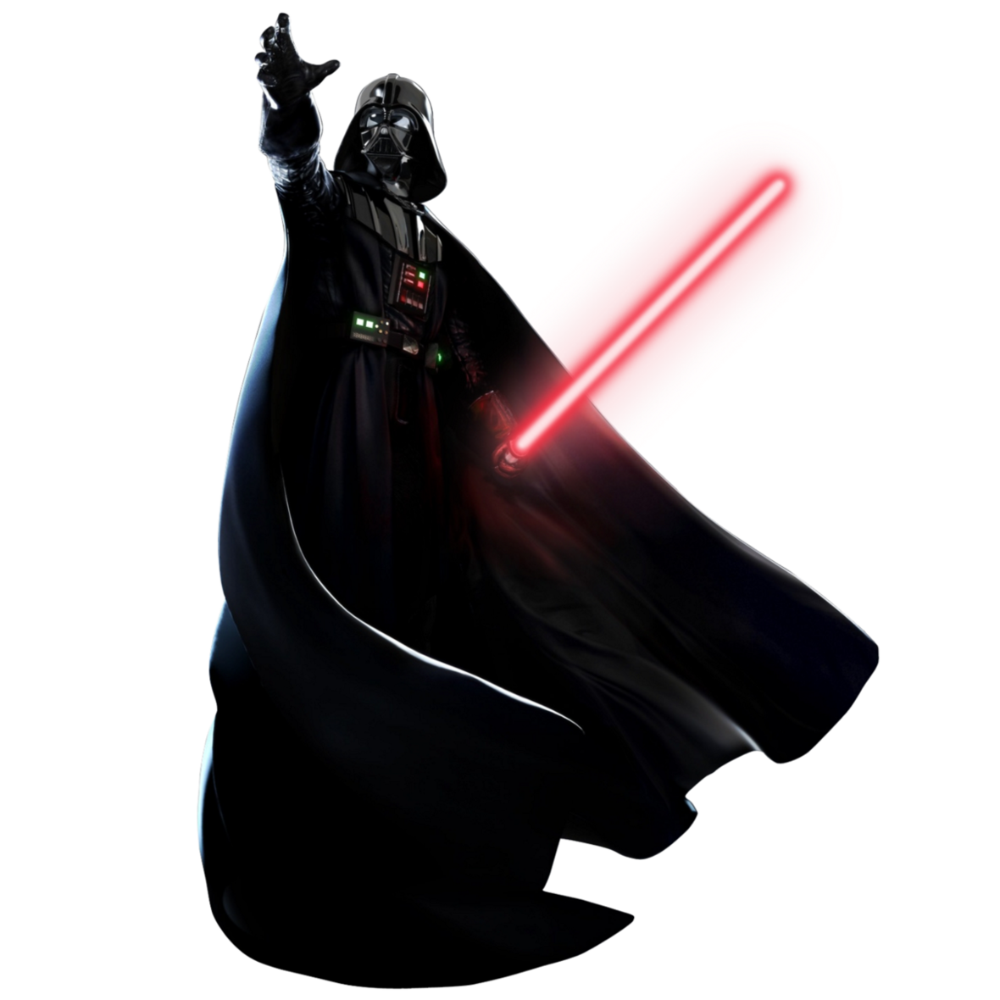
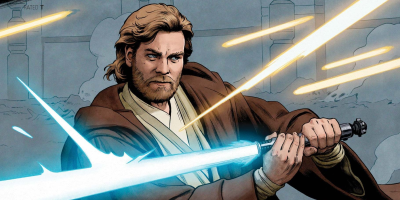
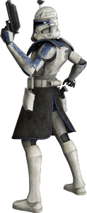
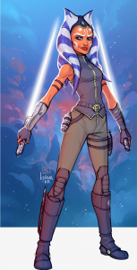

¿Qué pasaría si Darth Vader saliera del lado oscuro y volviera a ser parte de la orden jedi?
- Introducción 
- Sean bienvenidos al foro interactivo, les presentaremos un hilo argumental acerca del mítico Darth Vader, todo esto creado por nuestra autoría y hecho para ustedes, en donde conocerán un interesante hilo argumental basado en What if… o que pasaría si, todo esto con el fin de entretener y promover la imaginación, los giros drásticos y descabellados que unos simples fans pueden lograr gracias a una de sus sagas favoritas.
- Historia 
- Todos conocemos a Darth Vader, uno de los siths más temidos en el universo de Star wars y el más respetado,
pero se han preguntado, ¿Qué hubiera pasado si Vader se iba con la resistencia?
Pues nosotros proponemos que podía pasar esto:
Darth Vader recién admitido como Lord Sidious como su aprendiz tiene la tarea de buscar un jedi y matarlo para tomar el cristal kyber de su sable de luz y terminar su entrenamiento para volverse Lord sith, Vader cumple su cometido pero cuando esta por corromper el cristal se da cuenta que este tiene vida, este empieza a mostrarle a Vader su vida pasada como Anakin Skywalker, su tiempo como maestro y a sus compañeros de guerra; además de esto le recuerda a su esposa Padme Amidala y su hijo, al ver estos recuerdos dentro del sith vuelve a surgir un sentimiento de hacer lo correcto y luchar por sus amigos como cuando era un padawan, motivado por estos recuerdos decide volver a su refugio y reparar su armadura, en seguida tomaría su nave y volvería a donde su maestro Lord Sidious para decirle que dejara el camino del lado oscuro de la fuerza y sin más se retiraría de la sala, Sidius al ver esto decide atacar a Vader con su habilidad de controlar la fuerza pero lo que él no esperaba es que nuestro querido guerrero tomaría su sable de luz y desviaría los rayos que iban directo a él, demostrándole a Sidious que su determinación a volverse un Jedi es más firme que su poder.
Vader volvería a Tatuin en busca de su maestro Obi-wan Kenobi a quien le pediría perdón por todos sus actos crueles al momento de la ejecución de la orden 66, Kenobi sorprendido al verlo saca de una vez su sable de luz listo para la batalla, pero al ver a su ex padawan soltar el sable de luz que estaba en sus manos y arrodillarse ante el implorándole perdón este lo escucha y con un sentimiento de nostalgia lo abraza como el vínculo de “hermanos” que tenían, Obi-wan decide devolverle su sable de luz a Vader, este al momento de activarlo ve en su estela azul la esperanza de traer el equilibrio a la fuerza.
- hilo argumental–1
- Decididos por buscar más jedis para que se unan a ellos nuestros dos jedis deciden partir de Tatuin con destino
a Seelos donde habían escuchado que Rex se encontraba allí, pero antes de salir vemos a Vader con un color distinto
en su armadura, un color blanco el cual refleja su meta de traer paz al universo.
Al llegar a Seelos encontraron un AT-TE activo en la zona donde aterrizaron, al intentar acercarse el caminante AT-TE y su tripulación empezaron un ataque contra ellos, Vader y Kenobi esquivaron los ataques del caminante y en un intento de evitar los disparos, Vader con el uso de la fuerza logra desviar uno de los disparos hacia una de las piernas del caminante haciéndolo caer, al instante nuestros héroes entrar al caminante y se encuentran que este estaba siendo piloteado por clones y por el comandante Rex, Kenobi al ver a Rex guarda su sable de luz y le da la mano para ayudarlo.
-Veo que sobreviviste a la orden 66 amigo mío- le dice Kenobi
-General Kenobi está vivo, pensé ... pensé que había muerto
-Bueno ya me conoces Rex soy difícil de derrotar, además traigo un viejo amigo
De las sombras sale Vader extendiendo su mano.
-Es bueno verte Rex cuanto a pasado
Rex al verlo decide arremeter contra él y amenazarlo de muerte, Kenobi aparta a Rex de Vader y le explica que él está de su lado, Rex vuelve la mirada a Vader.
-Entonces ¿es usted general Skywalker?
-No Rex, sigo siendo Darth Vader, tratare de restaurar todo el caos que hizo Anakin Skywalker
Estando juntos, Rex les presenta a la tripulación, Kenobi y Vader les comentan a los clones el plan que tienen para vencer al emperador.
-¿No creen que es muy arriesgado para un grupo de solo 5 personas? -dice uno de los clones
-Sí, si tan solo tuviéramos otro maestro a nuestro lado sería un poco más fácil- responde Obiwan
-Conozco a un viejo aliado, está en mandalor- Responde Rex.
- hilo argumental–2
- Decididos parten los 5 a mandalor, en el camino Vader trabaja en variantes para su armadura, que le
permitan cambiar su casco dependiendo de la situación a la que se vayan a enfrentar y una variante que le
permita quitarse el casco y no le impida respirar sin este.
Cuando llegan a Mandalor Vader y Obi-wan perciben una presencia conocida, deciden ir los dos a buscar a esa persona, guiados por las señales de fuerza hasta llegar al salón principal del castillo de mandalor, al entrar se encuentra con Ahsoka Tano, ella al voltear y verlos se encuentra sorprendida y sin palabras.
-Ahsoka, ¿cómo estás? - dice Vader
Ahsoca se acerca a él y le da un abrazo
-Es bueno tenerte de vuelva maestro, no sabes la falta que hacías
Vader la abraza
-Es bueno estar devuelta
Terminados los saludos le explican a Ahsoka el plan que tienen, ella acepta y les dice que en la ausencia de ellos dos logro hacerse con un pequeño grupo de lucha de la resistencia de Mandalor, ella les dice que pueden ir con un pequeño grupo de estos para acabar con Sidius y así acabar de una vez por todas el caos del universo.

